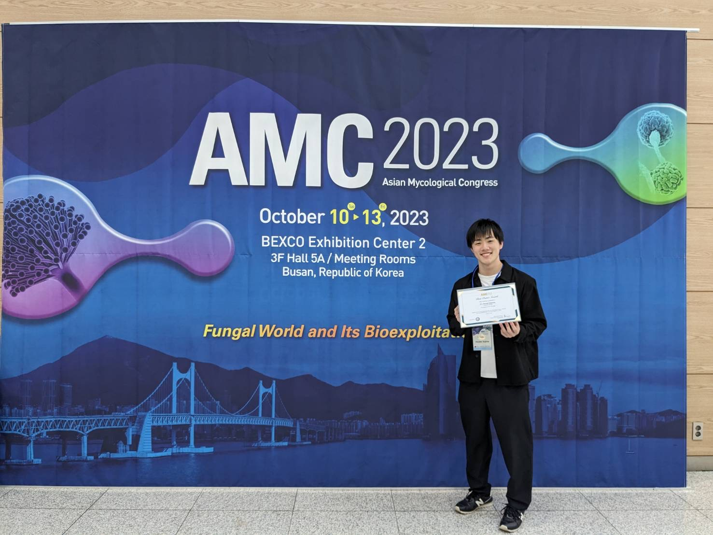
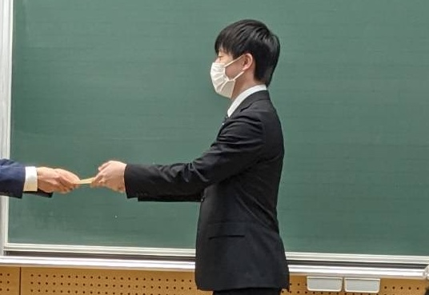

受賞（国際学会・ポスター発表）

Asian Mycological Congress 2023 Best Poster Award 発表者として受賞 (2023年10月13日)
受賞（国内学会・ポスター発表）

第73回日本木材学会大会 学生優秀ポスター賞 発表者として受賞 (2023年3月16日)
Asian Mycological Congress 2023 Best Poster Award 発表者として受賞 (2023年10月13日)
第73回日本木材学会大会 学生優秀ポスター賞 発表者として受賞 (2023年3月16日)